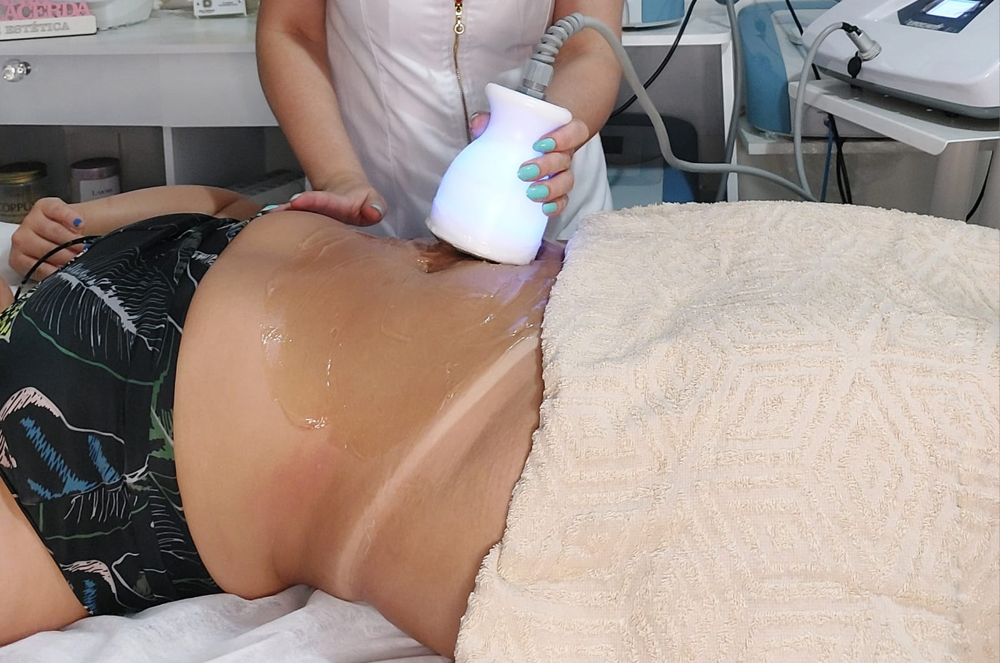
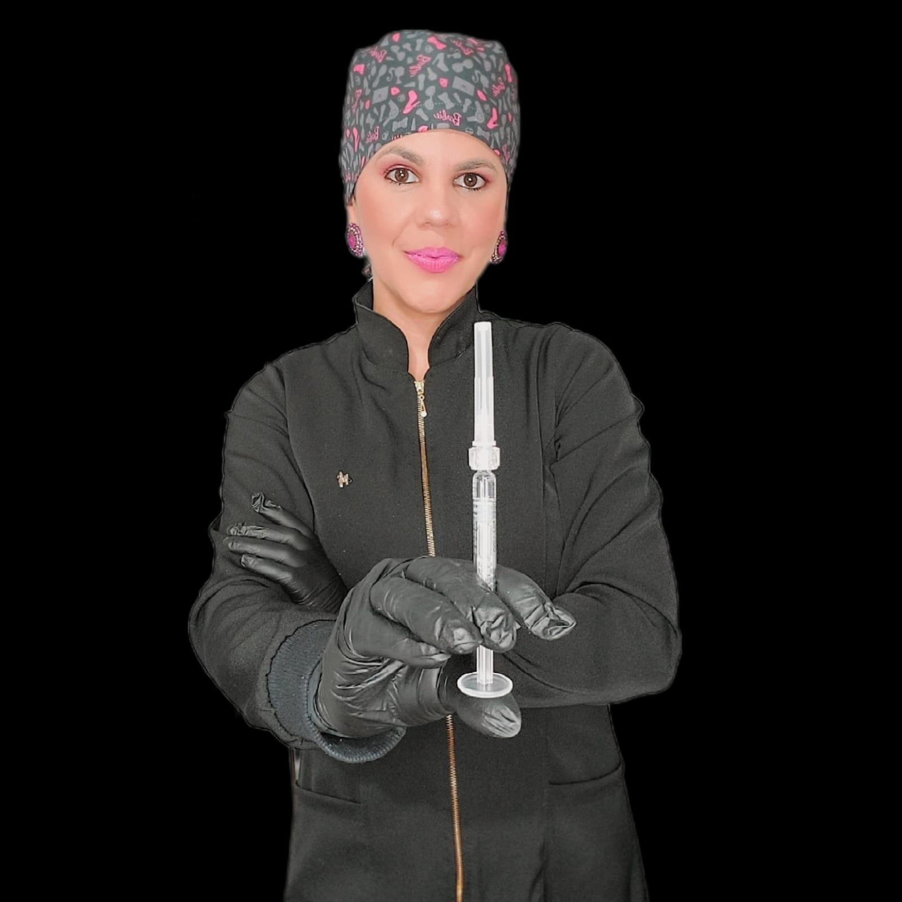

Tratamento
Toxina Botulínica (Botox)
Procedimento injetável que elimina ou reduz rugas faciais, concedendo um aspecto mais jovial e fresco ao rosto, otimizando a beleza de forma natural.
Quero saber maisCentro de Estética · São Paulo
Tratamentos estéticos personalizados para realçar sua beleza e elevar sua autoestima.
✦ Beleza que transforma. Cuidado que acolhe. ✦
Quem somos
Se você busca cuidados estéticos com excelência, a Dra. Tânia Lacerda oferece tratamentos personalizados para realçar sua beleza e promover seu bem-estar. Com anos de experiência, trabalha com procedimentos como limpeza de pele, rejuvenescimento facial, massagens terapêuticas e muito mais. Sua missão é unir técnicas modernas e atendimento humanizado, garantindo resultados naturais e satisfatórios.
O que oferecemos
Procedimentos selecionados para cada necessidade, com técnica e segurança.
Tratamento
Procedimento injetável que elimina ou reduz rugas faciais, concedendo um aspecto mais jovial e fresco ao rosto, otimizando a beleza de forma natural.
Quero saber mais
Tratamento
Substâncias injetáveis que estimulam a produção natural de colágeno pelo corpo, combatendo flacidez, rugas e perda de volume com resultados progressivos e duradouros.
Quero saber mais.jpeg)
Tratamento
Procedimento minimamente invasivo que utiliza enzimas para tratar gordura localizada, celulite, flacidez e estrias, com ação direta e resultados visíveis.
Quero saber mais
Tratamento
Ultrassom de baixa frequência que reduz gordura localizada de forma não cirúrgica. O corpo elimina naturalmente as células tratadas pelo sistema linfático.
Quero saber mais
Tratamento
Microperfurações na pele que estimulam colágeno e elastina, melhorando cicatrizes, rugas, estrias e manchas, além de potencializar a absorção de ativos.
Quero saber mais
Tratamento
Massagem delicada que reduz inchaço, hematomas e fibroses após cirurgias, acelerando a recuperação, melhorando a cicatrização e proporcionando mais conforto.
Quero saber mais
Quem me atende
CRBM: 65.232
Desde sempre, a beleza e o bem-estar estiveram entre minhas maiores paixões. Escolhi a estética não apenas como profissão, mas como missão de vida: ajudar cada pessoa a se sentir mais confiante e feliz com sua própria imagem.
O que dizem sobre nós
Como nos encontrar
R. Tangaracá, 60 – Jardim Pedro José Nunes, São Paulo – SP, 08061-150